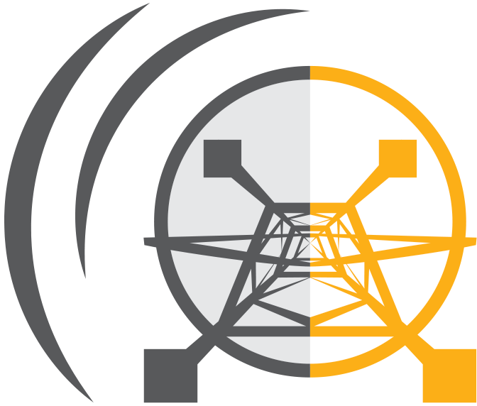

<div class="layout--models-and-data">
  <div class="grid grid--p-3">
    <div class="cell cell--12 cell--lg-8 left-box">
      <p>
      The Power Lab specializes in model-based collaboration with a range of scholars and partners in order to capture requisite technical detail and an understanding of the political economy of energy systems. We aim to provide open and broadly accessible data, models and insights, which offer several advantages:
      <ol>
        <li>Facilitating replicability and transparency with respect to assumptions that affect model results</li>
        <li>Taking the power of scenario creation out of the hands of entrenched incumbents</li>
        <li>Encouraging more creative uses of modeling tools to explore non-technical elements of system transitions</li>
      </ol>
      </p>
      <p>
      <a href="https://github.com/Power-Lab ">Explore our models and data on Github</a>
      </p>
    </div>
    <div class="cell cell--12 cell--lg-4 sticky-sidebar pad-top">
      <div class="content">
      <div class="content-inner">
      <h2>Featured Models</h2>
      <ul>
        <li><a
            href="https://github.com/east-winds/power-systems-optimization">Power
          Systems Optimization</a></li>
        <li><a href="https://github.com/GeodataTools/geodata">Geodata</a></li>
        <li><a href="https://github.com/jhelvy/solar-learning-2021">Solar
            Learning 2021</a></li>
      </ul>
      </div>
      
      </div>
    </div>
  </div>
</div>
